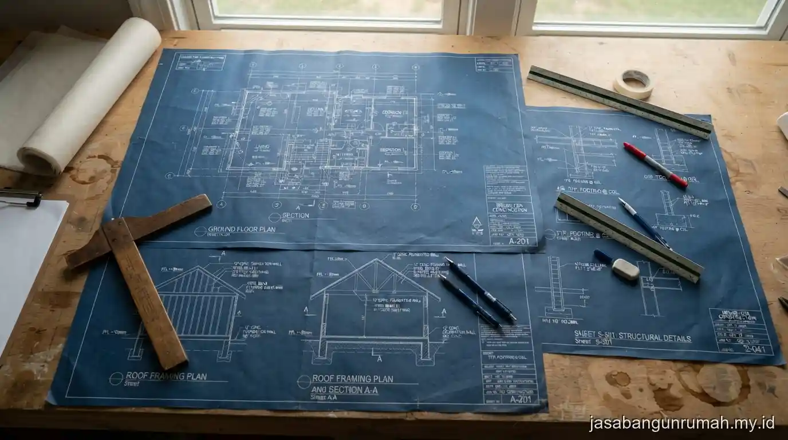

Daftar Isi
Cara kerja jasa arsitek profesional umumnya dimulai dari konsultasi kebutuhan, dilanjutkan sketsa konsep, gambar tiga dimensi, revisi bersama klien, hingga penyusunan gambar kerja detail yang siap digunakan tim konstruksi di lapangan.
Tahap Konsultasi Awal dan Penggalian Kebutuhan
Tahap pertama kerja sama dengan arsitek adalah sesi konsultasi untuk memahami kebutuhan ruang, jumlah anggota keluarga, gaya desain yang disukai, serta anggaran yang tersedia untuk keseluruhan proyek.
Pada tahap ini, arsitek biasanya juga menanyakan kondisi lahan seperti ukuran, bentuk, dan arah hadap, karena faktor tersebut sangat memengaruhi penentuan konsep denah dan orientasi bangunan. Semakin detail informasi yang diberikan klien pada tahap awal, semakin akurat pula konsep yang akan disusun arsitek pada tahap berikutnya.
Tahap Penyusunan Sketsa Konsep dan Gambar Tiga Dimensi
Setelah kebutuhan klien dipahami, arsitek akan menyusun sketsa konsep awal berupa denah kasar dan gambar tiga dimensi sederhana untuk memberikan gambaran visual mengenai bentuk dan tata ruang bangunan.
Sketsa konsep ini berfungsi sebagai bahan diskusi awal sebelum masuk ke tahap desain yang lebih detail, sehingga klien dapat memberikan masukan mengenai penempatan ruang, ukuran, atau gaya fasad yang diinginkan. Pada tahap ini, perubahan konsep masih relatif mudah dilakukan karena belum masuk ke perhitungan teknis yang lebih rinci.
Tahap Revisi Desain Bersama Klien
Tahap revisi biasanya dilakukan beberapa kali sesuai kesepakatan awal dalam kontrak kerja, di mana klien memberikan masukan terhadap sketsa atau gambar tiga dimensi yang telah disusun sebelumnya.
Jumlah revisi yang disediakan berbeda-beda tergantung kebijakan masing-masing arsitek atau biro desain, sehingga penting bagi klien untuk memastikan ketentuan jumlah revisi tercantum jelas dalam kontrak kerja sejak awal guna menghindari biaya tambahan di luar kesepakatan.
Komunikasi yang jelas pada tahap ini akan mempercepat proses menuju gambar kerja final.

Tahap Penyusunan Gambar Kerja Detail
Setelah konsep disepakati, arsitek akan menyusun gambar kerja detail yang mencakup denah lengkap, tampak bangunan, potongan, rencana struktur umum, serta detail teknis lain yang dibutuhkan tim konstruksi untuk melaksanakan pembangunan.
Gambar kerja ini menjadi acuan utama bagi tukang atau kontraktor di lapangan, sehingga tingkat kedetailannya sangat memengaruhi kelancaran proses konstruksi. Gambar kerja yang kurang detail berisiko menimbulkan kesalahan interpretasi di lapangan, sehingga tahap ini membutuhkan ketelitian tinggi dari arsitek yang mengerjakannya.
Bagi calon klien yang ingin mengetahui estimasi biaya untuk seluruh tahapan ini, dapat cek biaya jasa arsitek rumah sebagai gambaran awal sebelum berkonsultasi langsung.
Tahap Akhir: Serah Terima Dokumen dan Pendampingan Opsional
Setelah gambar kerja detail selesai, arsitek akan menyerahkan seluruh dokumen kepada klien, dan pada beberapa kasus juga menawarkan layanan pendampingan opsional berupa pengawasan berkala selama proses konstruksi berlangsung.
Layanan pendampingan ini berguna untuk memastikan hasil pembangunan di lapangan tetap sesuai dengan gambar kerja yang telah disusun, terutama untuk aspek estetika dan detail desain yang kadang sulit diinterpretasikan langsung oleh tukang tanpa pengawasan arsitek.
Bagi yang membutuhkan estimasi menyeluruh dari tahap desain hingga pengawasan, dapat ajukan form penawaran untuk mendapatkan rincian layanan sesuai kebutuhan proyek.